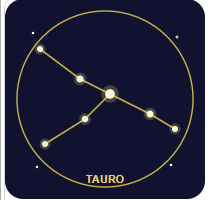

Tauro
Fechas correspondientes: 20 de abril - 20 de mayo

Características de Personalidad
Tauro representa la estabilidad, la constancia y el aprecio por lo tangible. Se vincula tradicionalmente con personas pacientes, prácticas y leales que valoran la tranquilidad y el esfuerzo sostenido.
Elemento Tierra y Planeta Regente (Venus): En la tradición astrológica clásica, estos dos elementos definen su temperamento simbólico.
Fortalezas y Aspectos por Mejorar
Fortalezas
Perseverancia, confiabilidad, sentido práctico, paciencia y lealtad hacia su entorno.
Aspectos por mejorar
Terquedad ante los cambios, apego excesivo a la rutina y lentitud para adaptarse a imprevistos.
Origen y Simbolismo
Se relaciona con el mito griego del toro blanco en el que se transformó Zeus para llevar a la princesa Europa hasta Creta, así como con el toro celeste de las antiguas tradiciones mesopotámicas.
Compatibilidad con Otros Signos
Haz clic en cualquiera de los signos compatibles con Tauro para ver su página: